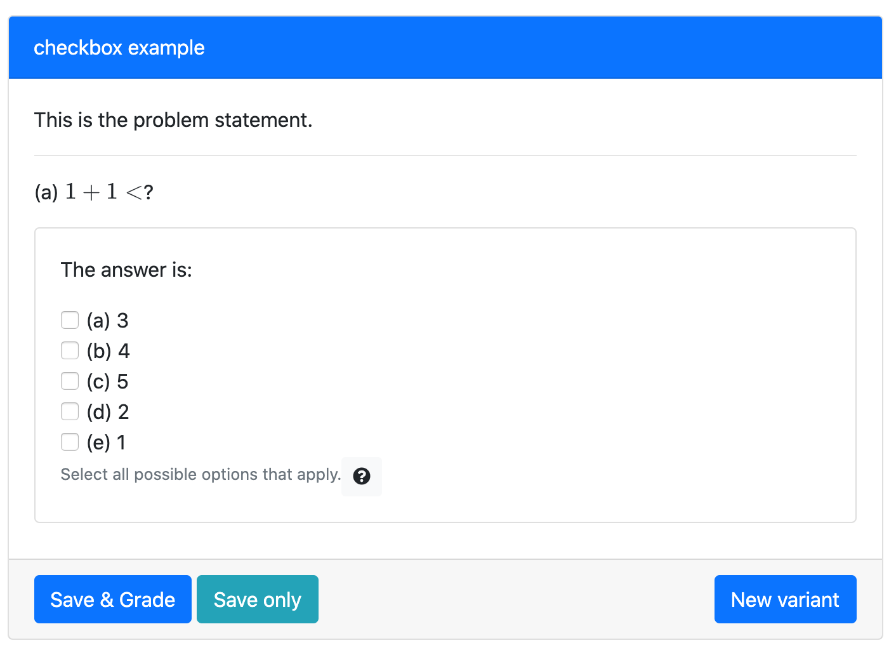

Checkbox
Reference: (link)
The checkbox only requires you to modify:
| Folder/File Name | Usage |
|---|---|
| if this is a standalone problem: info.json | The information of the question such as title, topic, tags, and uuid. |
| question.html | The main body of the question |
A pl-checkbox allows for one or more choices.
It displays a subset of the answers in a random order as checkboxes.
An example of the question.html
<pl-question-panel>
<p>
This is the problem statement.
</p>
</pl-question-panel>
<pl-question-panel><hr></pl-question-panel>
<pl-question-panel>
<p>
(a) $1+1<$?
</p>
</pl-question-panel>
<div class="card my-2">
<div class="card-body">
<pl-question-panel>
<p>
The answer is:
</p>
</pl-question-panel>
<pl-checkbox answers-name="vpos" weight="1">
<pl-answer correct="true">5</pl-answer>
<pl-answer correct="true">4</pl-answer>
<pl-answer> 1</pl-answer>
<pl-answer correct="true">3</pl-answer>
<pl-answer> 2</pl-answer>
</pl-checkbox>
</div>
</div>
The problem will be:

When you clicked the correct answer: